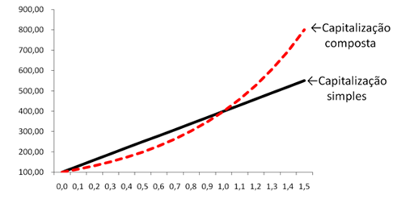

É o valor inicial de um empréstimo ou aplicação, que vai ter os juros.
Símbolos: C, P ou PV (Present Value em inglês)
É o tempo de duração do empréstimo ou do investimento. Pode ser medido em dias, meses, trimestres, semestres, anos, etc.
Símbolo: n
É o preço (em Reais) pago pelo aluguel, ou empréstimo, do dinheiro. É também o rendimento do dinheiro aplicado.
Símbolo: J
É a taxa percentual ou unitária do rendimento do capital ou pagamento pelo uso do capital (ao dia, ao mês, ao ano, etc)
Símbolo: i
Taxa = 5% entao multiplicar por 0,05
A fórmula é M = P + J (onde é só trocar pelo valor respectivo, explicado anteriormente qual é qual)
Enquanto na capitalização simples, o capital sobe durante o tempo, de um jeito linear, aumentando de 1000 em 1000 por exemplo, a capitalização composta sobe exponencialmente, subindo, por exemplo, 1000 no primeiro mês, depois 1000 + 2% do 1000, sendo assim 1020, depois o valor do mês anterior + o juros.
Escolhi esse conteúdo porque eu me perco bastante na hora de utilizar as fórmulas, na hora de mudar os símbolos pelos valores, por isso dicidi escolher esse item, para ajudar quem também tem dificuldade